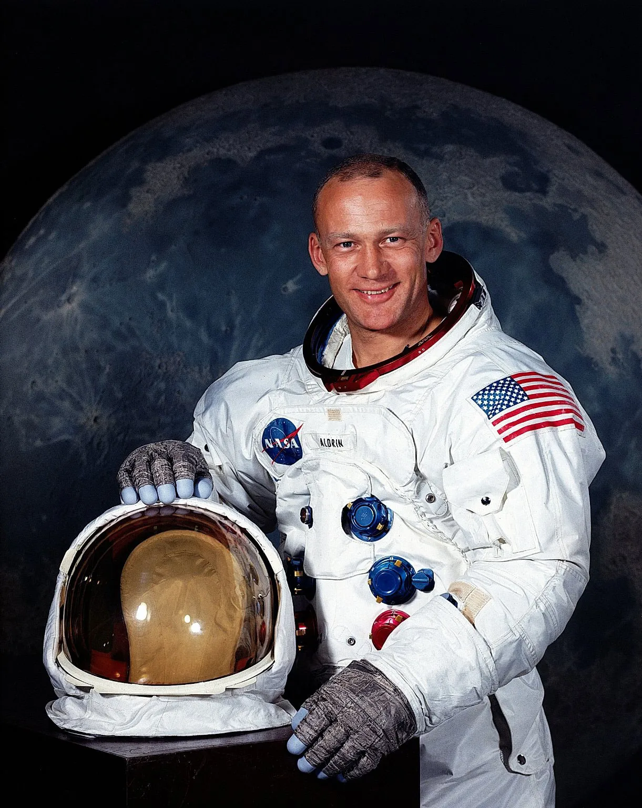
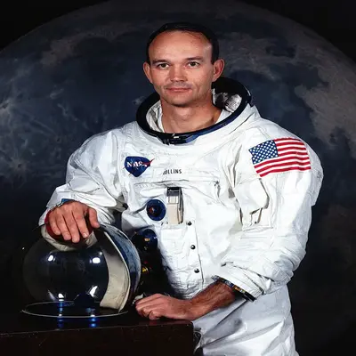

University of Southern California - Aerospace Engineering MSc.
Honorary Doctorates
Occupation(s):
Naval Aviator - 1950 - 1953 (Korean War)
Engineer
Test Pilot
Astronaut- Command Pilot on Gemini 8, - Command Pilot on Apollo 11.
Deputy Associate Administrator for Aeronautics - NASA - Washington D.C.
Fellow / Honorary Fellow - Society of Experimental Test Pilots, Royal Aeronautical Society, American Institute of Aeronautics and Astronautics & International Astronautics Federation.
Professor - Aerospace Engineering - 1971-1979 - University of Cincinnati.
Chairman - Computing Technologies - Aviation, Inc.
Accolades:
Air Medals x3
Presidential Medal of Freedom
Congressional Gold Medal
Congressional Space Medal of Honour
Explorers Club Medal
Robert H. Goddard Memorial Trophy
NASA Distinguished Service Medal
Harmon International Aviation Trophy
Royal Geographic Society's Gold Medal
Federation Aeronautique Internationale's Gold Space Medal
American Astronautical Society Flight Achievement Award
Robert J. Collier Trophy
AIAA Astronautics Award
Octave Chanute Award
John J. Montgomery Award

Name: - Edwin E. 'Buzz' Aldrin
Date of Birth: - 1930 -
Education:
Montclair High School, New Jersey.
West Point Military Academy, New York - Bs.
MiT - Astronautics PhD.
Honorary Degrees
Occupation(s):
Air Force Pilot.
Instructor.
West Point Military Academy, New York - Bs.
Astronaut- Gemini 12 - Apollo 11.
Commander USAD Test Pilot School - Edwards Air Force Base.
Author.
Inventor.
Accolades:
Air Force Distinguished Flying Cross - x2.
Air Force Distinguished Service Medal - x2.
Legion of Merit.
Presidential Medal of Freedom.
NASA Exceptional Service Medal.
Langley Gold Medal.
Congressional Gold Medal.
Collier Trophy.
Dr.Robert H Goddard Memorial Trophy.
Harmon Trophy.
Hubbard Medal.
Iven C.Kincheloe Award.

Name:- Michael Collins
Date of Birth:- 1930-2021
Education:
Saint Albans School, Washington D.C.
West Point Military Academy, New York - Bs.
Honorary Degrees
Occupation(s):
Fighter Pilot
Test Pilot
Astronaut - Gemini 10 - Apollo 11.
CAPCOM (Capsule Communicator) - Apollo 8.
Assistant Secretary of State - Public Affairs
Director of the National Air and Space Museum - Smithsonian Institution.